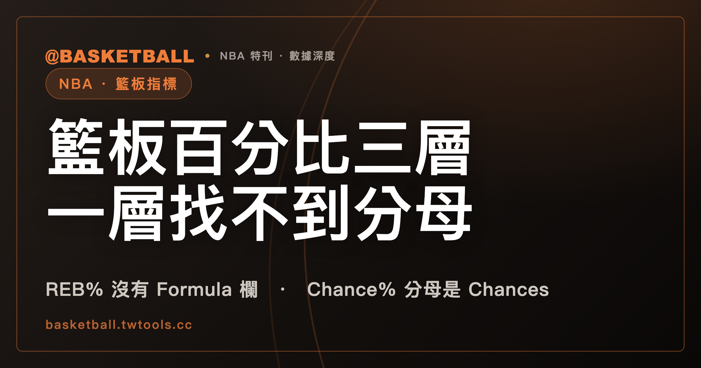

NBA 詞彙表的 REB%、OREB%、DREB% 沒有公式：籃板百分比三層之中，只有這一層的分母找不到定義
NBA 官方統計詞彙表（2026 年 9 月 25 日快照）的 REB%、OREB%、DREB% 三個條目，定義句寫 percentage of available rebounds，條目沒有 Formula 欄，全檔也沒有條目定義 available。REB／OREB／DREB Chance% 的 Formula 分母是有條目的 Chances，Adjusted 三條再從分母減去有條目的 Deferred Chances。

新手村｜數據入門・籃板類指標 REB%、Rebound Chance%、Adjusted 系列
本文依據的是 NBA 官方統計詞彙表（NBA Stats Glossary，nba.com/stats/help/glossary）2026 年 9 月 25 日取得的快照。這是單一網頁，頁面沒有標示賽季。文中所有「詞彙表寫了什麼」的句子，指的都是這份快照。
站內的失誤指標那篇，逐條讀過 TOV%、TO Ratio 等四個條目的 Definition 欄、Formula 欄與 Type 欄，這篇換成籃板。REB、OREB、DREB 這三欄的計數定義，請看技術統計表那篇；本文從它們的百分比條目開始。讀完之後，你可以打開詞彙表，判斷一個籃板百分比條目的分母寫在哪裡，也可以用自己的假設數字算一次 Chance% 與 Adjusted。
「籃板率」「籃板機會」「調整後」「卡位」是中文慣稱，詞彙表沒有這些條目名，站上也沒有既定譯名，所以文中保留英文原名。Contested、Uncontested、Deferred、Rebound Chance 分別出自詞彙表各自定義的條目，文中不用中文慣稱把它們串在一起。「讓給隊友」是本文對 defers the rebound to a teammate 的轉述，原文寫的是 defers。
REB%、OREB%、DREB% 的條目有定義句，沒有 Formula 欄
三個條目的 Type 欄都是 Advanced，也都從 Definition 直接接到 Type，中間沒有 Formula 欄。
| 條目 | Name | 定義句（Definition 欄） |
|---|---|---|
| REB% | Rebounding Percentage | The percentage of available rebounds a player or team grabbed while on the floor |
| OREB% | Offensive Rebounding Percentage | The percentage of available offensive rebounds a player or team obtains while on the floor |
| DREB% | Defensive Rebounding Percentage | The percentage of available defensive rebounds a player or team obtains while on the floor. |
中文讀法是：球員或球隊在場上時，取得的 available（可得）籃板佔的百分比；OREB% 限定進攻籃板，DREB% 限定防守籃板。
本文的讀法是：這個百分比的分母，是定義句裡的 available rebounds。這是把定義句拆開的讀法，詞彙表沒有替這三個條目寫算式。
available 在詞彙表出現四次，都在定義句裡，沒有條目解釋它
分母既然寫成 available rebounds，下一個問題是：available 的範圍，詞彙表有沒有交代？
在快照的全文文字檔搜尋 available，得到 4 筆：REB%、OREB%、DREB% 三條的定義句各一筆，第四筆在 OPP OREB% 的定義句。沒有任何條目以 available 為名，也沒有任何條目解釋 available rebounds 的範圍或算法。四筆都是拿來用，沒有一筆在解釋它。想從詞彙表本身查出 available 要怎麼數，查不到。
Rebound Chance 的判準是球越過籃框下方後，誰是 closest player
REB%、OREB%、DREB% 之外，詞彙表另有一組用 chance 當單位的條目。先看 chance 本身怎麼定義。
REB Chances 條目（Name 是 Rebound Chances，Type 是 Rebounding）的定義句是：A player has a rebound chance if they are the closest player to the ball at any point in time between when the ball has crossed below the rim to when it is fully rebounded。中文讀法：從球越過籃框下方，到球被完整抓下之間，球員只要在任何一個時間點是 closest player to the ball（與球距離最短的球員），就有一次 rebound chance。
DREB Chances（Defensive Rebound Chances）與 OREB Chances（Offensive Rebound Chances）兩個條目用同一個時間區間與同一個判準，各自在句首加上前提：When on defense 與 When on offense。REB Chances 的定義句沒有區分進攻或防守。
有兩件事快照沒有寫：一次未進的投籃會產生幾個 chance，以及 chance 彼此是否互斥。全文搜尋 mutually exclusive 得 0 筆。只讀 Chances 的定義，算不出一次投籃未進對應幾個 chance。
Chance% 三條各附一行公式，分母是對應的 Chances
三個 Chance% 條目的 Type 都是 Rebounding，Formula 欄的分母都是上一節的 Chances。
| 條目 | Name | 定義句的主詞 | Formula 欄 |
|---|---|---|---|
| REB Chance% | Rebound Chance Percentage | a player or team | (REB)/(REB Chances) |
| OREB Chance% | Offensive Rebound Chance Percentage | a player or team | (OREB)/(OREB Chances) |
| DREB Chance% | Defensive Rebounds Chance Percentage | a player | (DREB)/(DREB Chances) |
三個條目的定義句都寫成「搶下的籃板數，相對於 rebounding chances 的百分比」。DREB Chance% 有兩處與另外兩條不同：Name 裡的 Rebounds 是複數（原文如此），定義句的主詞只寫 a player，沒有寫 team。
REB% 與 REB Chance% 的差別，先落在措辭上：前者寫 available rebounds，後者寫 rebounding chances。快照沒有把兩者互相定義，也沒有寫兩者如何換算。
Adjusted 三條把 Deferred Chances 從分母扣掉
Adjusted 系列也是三個條目，Type 同樣是 Rebounding。
| 條目 | 定義句（Definition 欄） | Formula 欄 |
|---|---|---|
| Adjusted REB Chance % | Percentage of rebounds gathered when given a rebound chance; excludes all deferred rebounds | (REB)/(REB Chances - Deferred REB Chances) |
| Adjusted OREB Chance % | Percentage of rebounds gathered when given a rebound chance on offense; excludes all deferred rebounds | (OREB)/(OREB Chances - Deferred OREB Chances) |
| Adjusted DREB Chance % | Percentage of rebounds gathered when given a rebound chance on defense; excludes all deferred rebounds | (DREB)/(DREB Chances - Deferred DREB Chances) |
三個條目的標籤，百分號前都有一個空格（Chance %），與 Chance% 條目的寫法不同。Name 依序是 Adjusted Rebound Chance Percentage、Adjusted Offensive Rebound Chance Percentage、Adjusted Defensive Rebound Chance Percentage。
分母裡的 Deferred Chances 也有各自的條目。Deferred REB Chances（Name 是 Deferred Rebounds Chances，Rebounds 為複數）的定義是：The number of times that a player has a rebound chance, but defers the rebound to a teammate。中文讀法：球員有 rebound chance，卻把籃板讓給隊友的次數。Deferred OREB Chances 與 Deferred DREB Chances 兩個條目，各自把進攻方、防守方的 rebound chance 讓給隊友的次數，定義成計數。
假設 OREB 3、OREB Chances 10、Deferred OREB Chances 2，Adjusted 會比 Chance% 高多少？
下面是假設的數字，不是任何球員或球隊的資料。「換成百分比」是本文的換算：Formula 欄算出的是一個比值，乘以 100 就是百分比。
假設某名球員在某段比賽裡，OREB 是 3，OREB Chances 是 10，Deferred OREB Chances 是 2。
先代入 OREB Chance% 的 Formula：
(OREB)/(OREB Chances)
= 3 / 10
= 0.30，換成百分比是 30%
再代入 Adjusted OREB Chance % 的 Formula：
(OREB)/(OREB Chances - Deferred OREB Chances)
= 3 / (10 - 2)
= 3 / 8
= 0.375，換成百分比是 37.5%
分子沒有動，分母從 10 降到 8，百分比從 30% 升到 37.5%。
再練一組防守端。假設 DREB 是 6，DREB Chances 是 8，Deferred DREB Chances 是 2：DREB Chance% ＝ 6 / 8 ＝ 0.75，換成百分比是 75%；Adjusted DREB Chance % ＝ 6 / (8 - 2) ＝ 6 / 6 ＝ 1.00，換成百分比是 100%。
最後一個練習不是算術。假設題目只給你 OREB 是 3，要你算這名球員的 OREB%。快照裡找不到可以代入的公式。本文的讀法是：缺的是 available offensive rebounds 的個數怎麼數。上面兩組練習的每個分母，都有條目可對。
Contested 與 Uncontested 都以 3.5 呎為界，兩句措辭不同
詞彙表還有一組籃板條目，用對手與搶籃板者的距離分類。Contested 與 Uncontested 各有 REB、OREB、DREB 三個條目，OREB 與 DREB 兩條限定進攻或防守籃板。
| 條目 | 定義句（Definition 欄） |
|---|---|
| Contested REB（Contested Rebounds） | A rebound where an opponent is within 3.5 feet of the rebounder |
| Uncontested REB（Uncontested Rebounds） | The number of rebounds gathered by a player or team while no opponent is within 3.5 feet |
兩句的距離都是 3.5 呎。措辭有兩處不同：Contested 寫 within 3.5 feet of the rebounder（距離以搶籃板者為準），Uncontested 寫 no opponent is within 3.5 feet，後面沒有接 of the rebounder。兩句各自照原文讀。
Contested 有百分比條目：Contested REB%（Contested Rebound Percentage）、Contested OREB%、Contested DREB% 三條。Formula 欄依序是 (Contested REB)/(REB)、(Contested OREB)/(OREB)、(Contested DREB)/(DREB)，分母寫的是 REB、OREB、DREB。Uncontested 沒有百分比條目：全文搜尋 Uncontested.*% 得 0 筆。Contested 與 Chances 組合的條目也查不到，搜尋 Contested.*Chance 得 0 筆。
用兩個假設情境，練習判一次。情境一：某次籃板，搶到球的球員身旁有一名對手，距離他 2 呎。這符合 Contested 的定義句（an opponent is within 3.5 feet）。情境二：另一次籃板，場上所有對手與搶到球的球員都相距 6 呎以上。以搶到球的球員為量測點（本文假設）時，這符合 Uncontested 的定義句（no opponent is within 3.5 feet）。兩個距離都離 3.5 呎夠遠，用來示範兩句各自怎麼讀；剛好 3.5 呎時，條目只用 within／no opponent is within，沒有另以數學符號說明邊界讀法，本文不再延伸判定。
%OREB、%DREB 與 Boxouts 名稱相近，詞彙表各有獨立條目
名稱或主題相近的條目還有三組，它們不在上面的三層裡。
- %OREB 與 %DREB：Type 是 Usage。定義句是：球員在場上時，佔球隊進攻（或防守）籃板的百分比（the percentage of a team's offensive／defensive rebounds that a player has while on the court）。這兩條與 Type 為 Advanced 的 OREB%、DREB% 是不同的條目。DREB 與 OREB 兩項的另一種用法，可以看站內USG% 與 PIE 一文：它們在 PIE 公式裡是兩個加項。
- Boxouts：Type 是 Hustle，條目名是 Boxouts（沒有空格）。定義是一個次數，三個條件並列成立：球員與正在爭搶籃板的對手有身體接觸，顯示出明確進展或強烈努力使對手處於不利，並且成功阻止該對手取得籃板。
名字長得像，欄位不同。讀籃板類條目的時候，先看 Type 欄：Advanced、Rebounding、Usage、Hustle 各是詞彙表自己的分類。
三層之中，找不到分母定義的是 REB% 這一層
詞彙表的籃板百分比分三層寫：REB%、OREB%、DREB% 寫 available rebounds；Chance% 的分母是 Chances；Adjusted 再扣掉 Deferred Chances。後兩層的分母各有三個條目可對，第一層沒有。
「分母」這個詞用在第一層，是本文的讀法，因為那三個條目沒有寫算式。這個判斷可以被反對。有人會說 available rebounds 是籃球討論裡的通行概念，詞彙表不另立條目，讀者也看得懂；本文只講快照怎麼寫，不講通行說法是什麼。也有人會說 Chances 的定義不夠完整。後一種意見有根據，因為快照沒有說明一次未進投籃產生幾個 chance。本文沒有主張 Chances 的定義完整，只主張 Chances 有條目。
範圍與版本
本文談的範圍是 REB%、OREB%、DREB%、REB Chance%、REB Chances、Adjusted 系列、Contested／Uncontested 與 Boxouts，不含距離類與對手類條目（例如 OPP OREB%）。詞彙表是會被改動的網頁：如果官方日後替 REB% 補上公式，「找不到定義的是第一層」就不再成立。如果你今天打開的頁面與本文的表格不一致，以頁面上的當期內容為準。
常見問題
REB% 有公式嗎？
NBA 官方統計詞彙表 2026 年 9 月 25 日快照裡，REB%、OREB%、DREB% 三個條目只有定義句（percentage of available rebounds），沒有 Formula 欄；快照也沒有任何條目定義 available。見「REB%、OREB%、DREB% 的條目有定義句，沒有 Formula 欄」一節。
REB Chance% 的分母是什麼？
快照裡 REB Chance% 的 Formula 欄是 (REB)/(REB Chances)，分母是 Chances 條目：球越過籃框下方到被完整抓下之間，球員在任一時間點是 closest player to the ball。一次未進投籃會產生幾個 chance，快照沒有說明。
Adjusted REB Chance % 與 REB Chance% 差在哪裡？
快照裡 Adjusted REB Chance % 的 Formula 欄是 (REB)/(REB Chances - Deferred REB Chances)，分母多扣一項 Deferred REB Chances，也就是球員有 rebound chance、卻 defers the rebound to a teammate 的次數。OREB 與 DREB 各有對應的 Adjusted 條目。
Contested 籃板與 Uncontested 籃板怎麼分？
快照裡 Contested REB 寫對手在搶籃板者 3.5 呎以內（within 3.5 feet of the rebounder），Uncontested REB 寫沒有對手在 3.5 呎以內（no opponent is within 3.5 feet）。Contested 有三個百分比條目，分母是 REB、OREB、DREB；Uncontested 沒有百分比條目。見「Contested 與 Uncontested 都以 3.5 呎為界，兩句措辭不同」一節。
資料來源
- NBA Stats Glossary（2026 年 9 月 25 日取得的快照，頁面無賽季標記）：REB%、OREB%、DREB%、REB Chances、OREB Chances、DREB Chances、REB Chance%、OREB Chance%、DREB Chance%、Adjusted REB／OREB／DREB Chance %、Deferred REB／OREB／DREB Chances、Contested REB／OREB／DREB 與其百分比條目、Uncontested REB／OREB／DREB、%OREB、%DREB、Boxouts 條目。nba.com/stats/help/glossary